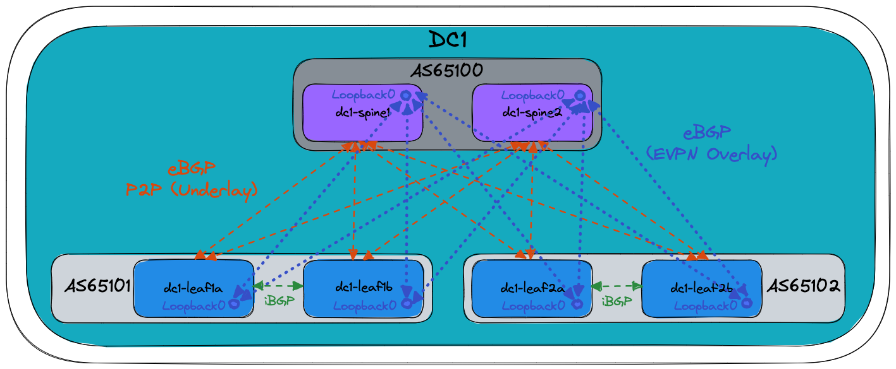

AVD Example for a Single Data Center Using Layer 3 Leaf Spine (L3LS)¶
Introduction¶
This example is meant to be used as the logical second step introducing AVD to new users, directly following the Introduction to Ansible and AVD section. The idea is that new users with access to virtual switches (using Arista vEOS-lab or cEOS) can learn how to generate configuration and documentation for a complete fabric environment. Users with access to physical switches will have to adapt a few settings. This is all documented inline in the comments included in the YAML files. If a lab with virtual or physical switches is not accessible, fear not! This example can also be used to only generate the output from AVD if required.
The example includes and describes all the AVD files and their content used to build a Layer 3 Leaf Spine (L3LS) EVPN/VXLAN Symmetric IRB network covering a single DC, using the following:
- Two (virtual) spine switches.
- Two sets of (virtual) leaf switches, serving endpoints such as servers.
- Two (virtual) layer2-only switches often used for management connectivity to the servers.
The example is meant as a simple starting point and more advanced examples will build upon this design to hopefully reduce any confusion when progressing.
Integration with CloudVision is not included in this example to keep everything as simple as possible, hence the Ansible host will communicate directly with the switches using eAPI.
Installation¶
Requirements to use this example:
- Follow the installation guide for AVD found here.
- Run the following playbook to copy the examples to your current working directory, for example
ansible-avd-examples:
ansible-playbook arista.avd.install_examples
This will show the following:
~/ansible-avd-examples# ansible-playbook arista.avd.install_examples
PLAY [Install Examples]***************************************************************************************************************************************************************************************************************************************************************
TASK [Copy all examples to ~/ansible-avd-examples]*****************************************************************************************************************************************************
changed: [localhost]
PLAY RECAP
****************************************************************************************************************************************************************************************************************************************************************************
localhost : ok=1 changed=1 unreachable=0 failed=0 skipped=0 rescued=0 ignored=0
After the playbook has run successfully, the directory structure will look as shown below, the contents of which will be covered in later sections:
- ansible-avd-examples/ (or wherever the playbook was run)
- single-dc-l3ls
- documentation/
- group_vars/
- images/
- intended/
- switch-basic-configurations/
- ansible.cfg
- inventory.yml
- playbook.yml
- README.md (this document)
- single-dc-l3ls
Please note: If the content of any file in the example is modified and the playbook is run again, the file will not be overwritten. However, if any file in the example is deleted and the playbook is run again, the file will be re-created.
Overall design overview¶
Physical topology¶
The drawing below shows the physical topology used in this example. The interface assignment shown here are referenced across the entire example, so keep that in mind if this example must be adapted to a different topology. Finally, the Ansible host is connected to the dedicated out-of-band management port (Ethernet0 when using vEOS-lab):

IP ranges used¶
| Out-of-band management IP allocation for DC1 | 172.16.1.0/24 |
|---|---|
| Default gateway | 172.16.1.1 |
| dc1-spine1 | 172.16.1.11 |
| dc1-spine2 | 172.16.1.12 |
| dc1-leaf1a | 172.16.1.101 |
| dc1-leaf1b | 172.16.1.102 |
| dc1-leaf2a | 172.16.1.103 |
| dc1-leaf2b | 172.16.1.104 |
| dc1-leaf1c | 172.16.1.151 |
| dc1-leaf2c | 172.16.1.152 |
| Point-to-point links between leaf and spine | (Underlay) |
| DC1 | 10.255.255.0/26 |
| Loopback0 interfaces used for EVPN peering | 10.255.0.0/27 |
| Loopback1 interfaces used for VTEP | (Leaf switches) |
| DC1 | 10.255.1.0/27 |
| VTEP Loopbacks used for diagnostics | (Leaf switches) |
| VRF10 | 10.255.10.0/27 |
| VRF11 | 10.255.11.0/27 |
| SVIs (interface vlan…) | 10.10.<VLAN-ID>.0/24 |
For example interface VLAN11 has the IP address: |
10.10.11.1 |
| MLAG Peer-link (interface vlan 4094) | (Leaf switches) |
| DC1 | 10.255.1.64/27 |
| MLAG iBGP Peering (interface vlan 4093) | (Leaf switches) |
| DC1 | 10.255.1.96/27 |
BGP Design¶
The following drawing shows the BGP Design used in this example. The orange dashed lines illustrate the eBGP point-to-point peerings used for the underlay, while the blue dotted lines illustrate the eBGP multi-hop peerings between Loopback0 interfaces used for the EVPN overlay. Finally, the green dashed lines illustrate the iBGP peerings between MLAG peers:

Basic EOS config¶
Basic connectivity between the Ansible host and the switches must be established manually before Ansible can be used to push configuration. The following must be configured on all switches:
- A hostname configured purely for ease of understanding.
- An IP enabled interface - in this example the dedicated out-of-band management interface is used.
- A username and password with the proper access privileges.
Below is the basic configuration file for dc1-leaf1a:
! ansible-avd-examples/single-dc-l3ls/switch-basic-configurations/dc1-leaf1a-basic-configuration.txt
! Basic EOS config
!
! Hostname of the device
hostname dc1-leaf1a
!
! Configures username and password for the ansible user
username ansible privilege 15 role network-admin secret sha512 $6$7u4j1rkb3VELgcZE$EJt2Qff8kd/TapRoci0XaIZsL4tFzgq1YZBLD9c6f/knXzvcYY0NcMKndZeCv0T268knGKhOEwZAxqKjlMm920
!
! Defines the VRF for MGMT
vrf instance MGMT
!
! Defines the settings for the Management1 interface through which Ansible reaches the device
interface Management1
description oob_management
no shutdown
vrf MGMT
! IP address - must be set uniquely per device
ip address 172.16.1.101/24
!
! Static default route for VRF MGMT
ip route vrf MGMT 0.0.0.0/0 172.16.1.1
!
! Enables API access in VRF MGMT
management api http-commands
protocol https
no shutdown
!
vrf MGMT
no shutdown
!
end
!
! Save configuration to flash
copy running-config startup-config
The folder single-dc-l3ls/switch-basic-configurations/ contains a file per device for the initial configuration.
Ansible inventory, group vars and naming scheme¶
The following drawing shows a graphic overview of the Ansible inventory, group variables and naming scheme used in this example:

Please note, the two servers dc1-leaf1-server1 and dc1-leaf2-server1 at the bottom are not configured by AVD, but the switch ports used to connect to the servers are.
Group names use uppercase and underscores:
- FABRIC
- DC1
- DC1_SPINES
- DC1_L3_LEAVES
- DC1_L2_LEAVES
All hostnames use lowercase and dashes for example:
- dc1-spine1
- dc1-leaf1a
- dc1-leaf2c
The drawing also shows the relationships between groups and their children:
- For example,
dc1-spine1anddc1-spine2are both children of the group calledDC1_SPINES.
Additionally groups themselves can be children of another group for example:
DC1_L3_LEAVESis a group consisting of the groupsDC1_LEAF1andDC1_LEAF2DC1_L3_LEAVESis also a child of the groupDC1.
This naming convention makes it possible to easily extend anything, but as always, this can be changed based on your preferences. Just ensure that the names of all groups and hosts are unique.
Content of the inventory.yml file¶
This section describes the full ansible-avd-examples/single-dc-l3ls/inventory.yml file used to represent the topology shown above.
It is important that the hostnames specified in the inventory exist either in DNS or in the hosts file on your Ansible host to allow successful name lookup and be able to reach the switches directly. A successful ping from the Ansible host to each inventory host allows to verify name resolution (e.g. ping dc1-spine1).
Alternatively, if there is no DNS available, or if devices need to be reached using a fully-qualified domain-name (FQDN), define ansible_host to be an IP address or FQDN for each device - see below for an example:
---
all:
children:
FABRIC:
children:
DC1:
children:
DC1_SPINES:
hosts:
dc1-spine1:
ansible_host: 172.16.1.11
dc1-spine2:
ansible_host: 172.16.1.12
DC1_L3_LEAVES:
hosts:
dc1-leaf1a:
ansible_host: 172.16.1.101
dc1-leaf1b:
ansible_host: 172.16.1.102
dc1-leaf2a:
ansible_host: 172.16.1.103
dc1-leaf2b:
ansible_host: 172.16.1.104
DC1_L2_LEAVES:
hosts:
dc1-leaf1c:
ansible_host: 172.16.1.151
dc1-leaf2c:
ansible_host: 172.16.1.152
NETWORK_SERVICES:
children:
DC1_L3_LEAVES:
DC1_L2_LEAVES:
CONNECTED_ENDPOINTS:
children:
DC1_L3_LEAVES:
DC1_L2_LEAVES:
The above is what is included in this example, purely to make it as simple as possible to get started. However, going forward please do not to carry over this practice to a production environment, where an inventory file for an identical topology should look as follows when using DNS:
---
all:
children:
FABRIC:
children:
DC1:
children:
DC1_SPINES:
hosts:
dc1-spine1:
dc1-spine2:
DC1_L3_LEAVES:
hosts:
dc1-leaf1a:
dc1-leaf1b:
dc1-leaf2a:
dc1-leaf2b:
DC1_L2_LEAVES:
hosts:
dc1-leaf1c:
dc1-leaf2c:
NETWORK_SERVICES:
children:
DC1_L3_LEAVES:
DC1_L2_LEAVES:
CONNECTED_ENDPOINTS:
children:
DC1_L3_LEAVES:
DC1_L2_LEAVES:
The NETWORK_SERVICES section does two things:
- It creates a group named “NETWORK_SERVICES”. Ansible variable resolution resolves this group name to the identically named group_vars file (
ansible-avd-examples/single-dc-l3ls/group_vars/NETWORK_SERVICES.yml). - The contents of the file, which in this case are specifications of VRFs and VLANs, are then applied to the children of the group, in this case the two groups
DC1_L3_LEAVESandDC1_L2_LEAVES
The CONNECTED_ENDPOINTS section also does two things:
- It creates a group named “CONNECTED_ENDPOINTS”. Ansible variable resolution resolves this group name to the identically named group_vars file (
ansible-avd-examples/single-dc-l3ls/group_vars/CONNECTED_ENDPOINTS.yml). - The contents of the file, which in this case are specifications of connected endpoints (typically servers), are then applied to the children of the group, in this case the two groups
DC1_L3_LEAVESandDC1_L2_LEAVES
Defining device types¶
Since this example covers building a L3LS network, AVD must know about the device types, for example spines, L3 leaves, L2 leaves etc. The devices are already grouped in the inventory, so the device types are specified in the group variable files with the following names and content:
ansible-avd-examples/single-dc-l3ls/group_vars/DC1_SPINES.yml
ansible-avd-examples/single-dc-l3ls/group_vars/DC1_L3_LEAVES.yml
ansible-avd-examples/single-dc-l3ls/group_vars/DC1_L2_LEAVES.yml
For example, this means that all switches that are children of the DC1_SPINES group defined in the inventory will be of the type spine.
Setting fabric-wide configuration parameters¶
The ansible-avd-examples/single-dc-l3ls/group_vars/FABRIC.yml file defines generic settings that apply to all children of the FABRIC group as defined in the inventory described earlier.
The first section defines how the Ansible host connects to the devices:
ansible_connection: ansible.netcommon.httpapi
ansible_network_os: arista.eos.eos
ansible_user: ansible
ansible_password: ansible
ansible_become: true
ansible_become_method: enable
ansible_httpapi_use_ssl: true
ansible_httpapi_validate_certs: false
- The Ansible host must use eAPI via HTTPS.
- Network OS which in this case is Arista EOS.
- The username/password combo.
- How to escalate privileges to get write access.
- Use SSL.
- Do not validate SSL certificates.
The next section specifies variables that generate configuration to be applied to all devices in the fabric:
fabric_name: FABRIC
underlay_routing_protocol: EBGP
overlay_routing_protocol: EBGP
local_users:
ansible:
privilege: 15
role: network-admin
sha512_password: $6$7u4j1rkb3VELgcZE$EJt2Qff8kd/TapRoci0XaIZsL4tFzgq1YZBLD9c6f/knXzvcYY0NcMKndZeCv0T268knGKhOEwZAxqKjlMm920
admin:
privilege: 15
role: network-admin
no_password: true
bgp_peer_groups:
evpn_overlay_peers:
password: Q4fqtbqcZ7oQuKfuWtNGRQ==
ipv4_underlay_peers:
password: 7x4B4rnJhZB438m9+BrBfQ==
mlag_ipv4_underlay_peer:
password: 4b21pAdCvWeAqpcKDFMdWw==
p2p_uplinks_mtu: 1500
- The name of the fabric for internal AVD use. This name must match the name of an Ansible Group (and therefore a corresponding group_vars file) covering all network devices.
- Local users/passwords and their privilege levels. In this case the
ansibleuser is set with the passwordansibleand anadminuser is set with no password. - BGP peer groups and their passwords (all passwords are “arista”).
- Point-to-point interface MTU, in this case it is set to 1500 since the example is using vEOS, but when using hardware this should be set to 9214 instead.
Setting device specific configuration parameters¶
The ansible-avd-examples/single-dc-l3ls/group_vars/DC1.yml file defines settings that apply to all children of the DC1 group as defined in the inventory described earlier. This time the settings defined are no longer fabric-wide, but are limited to DC1. In this example with only a single data center this is of limited benefit, but it allows to scale the configuration to a scenario with multiple data centers in the future.
---
mgmt_gateway: 172.16.1.1
spine:
defaults:
platform: vEOS-lab
loopback_ipv4_pool: 10.255.0.0/27
bgp_as: 65100
bgp_defaults:
- no bgp default ipv4-unicast
- distance bgp 20 200 200
- graceful-restart restart-time 300
- graceful-restart
nodes:
dc1-spine1:
id: 1
mgmt_ip: 172.16.1.11/24
dc1-spine2:
id: 2
mgmt_ip: 172.16.1.12/24
Initially the default gateway for the management interface of all devices in DC1 is defined.
The following section defines the spine layer:
- A number of default settings that apply to all nodes with the device type
spine:platformreferences default settings defined in AVD that are specific to certain switch platforms.loopback_ipv4_pooldefines the IP scope from which AVD assigns IPv4 addresses for Loopback0.bgp_asdefines the BGP AS number.bgp_defaultsdefines generic BGP settings.
nodesdefines the actual spine switches, using the hostnames defined in the inventory.idis used to calculate the various IP addresses, for example, the IPv4 address for the Loopback0 interface. In this case dc1-spine1 will get the IPv4 address 10.255.0.1/27 assigned to the Loopback0 interface.mgmt_ipdefines the IPv4 address of the management interface. As stated earlier Ansible will perform name lookup when using the hostnames specified in the inventory, unless using theansible_hostoption. However there is no automatic mechanism to grab the result of the name lookup and use that to generate the configuration of the actual management interface.
The next section covers the L3 leaf switches. Significantly more settings need to be set compared to the spine switches:
l3leaf:
defaults:
platform: vEOS-lab
loopback_ipv4_pool: 10.255.0.0/27
loopback_ipv4_offset: 2
vtep_loopback_ipv4_pool: 10.255.1.0/27
uplink_interfaces: ['Ethernet1', 'Ethernet2']
uplink_switches: ['dc1-spine1', 'dc1-spine2']
uplink_ipv4_pool: 10.255.255.0/26
mlag_interfaces: ['Ethernet3', 'Ethernet4']
mlag_peer_ipv4_pool: 10.255.1.64/27
mlag_peer_l3_ipv4_pool: 10.255.1.96/27
bgp_defaults:
- no bgp default ipv4-unicast
- distance bgp 20 200 200
- graceful-restart restart-time 300
- graceful-restart
virtual_router_mac_address: 00:1c:73:00:00:99
spanning_tree_priority: 4096
spanning_tree_mode: mstp
node_groups:
DC1_L3_LEAF1:
bgp_as: 65101
nodes:
dc1-leaf1a:
id: 1
mgmt_ip: 172.16.1.101/24
uplink_switch_interfaces:
- Ethernet1
- Ethernet1
dc1-leaf1b:
id: 2
mgmt_ip: 172.16.1.102/24
uplink_switch_interfaces:
- Ethernet2
- Ethernet2
DC1_L3_LEAF2:
bgp_as: 65102
nodes:
dc1-leaf2a:
id: 3
mgmt_ip: 172.16.1.103/24
uplink_switch_interfaces:
- Ethernet3
- Ethernet3
dc1-leaf2b:
id: 4
mgmt_ip: 172.16.1.104/24
uplink_switch_interfaces:
- Ethernet4
- Ethernet4
- Again a number of default settings are defined:
platformreferences default settings defined in AVD that are specific to certain switch platforms.loopback_ipv4_pooldefines the IP scope from which AVD assigns IPv4 addresses for Loopback0. Please note that in this example, this IP pool is identical to the one used for the spine switches. To avoid assigning identical IP addresses for several devices, the optionloopback_ipv4_offsetis defined next.loopback_ipv4_offsetoffsets all assigned loopback IP addresses counting from the beginning of the IP scope. This is required when the same IP pool is used for two different node_types (like spine and l3leaf in this example) to avoid over-lapping IPs. In this case the offset is “2” because each spine switch uses one loopback address.vtep_loopback_ipv4_pooldefines the IP scope from which AVD assigns IPv4 addresses for the VTEP (Loopback1).uplink_interfacesdefines the interfaces used locally on the leaf switches.uplink_switchesdefines the uplink switches which in this case are dc1-spine1 and dc1-spine2. Note that theuplink_interfacesanduplink_switchesare paired vertically.uplink_ipv4_pooldefines the IP scope from which AVD assigns IPv4 addresses for the uplink interfaces that was just defined.mlag_interfacesdefines the MLAG interfaces used on each leaf switch, in this case Ethernet3 and Ethernet4. These two interfaces will form PortChannel3 used for the MLAG peer link. Note that PortChannel3 is selected, since the first interface is Ethernet3.mlag_peer_ipv4_pooldefines the IP scope from which AVD assigns IPv4 addresses for the MLAG peer link interface VLAN4094.mlag_peer_l3_ipv4_pooldefines the IP scope from which AVD assigns IPv4 addresses for the iBGP peering established between the two leaf switches via the SVI/IRB interface VLAN4093.virtual_router_mac_addressdefines the MAC address used for the anycast gateway used on the various subnets. This is the MAC address that connected endpoints will learn when ARPing for their default gateway.spanning_tree_prioritysets the spanning-tree priority. Since spanning-tree in a L3LS network is effectively only running locally on the switch, the same priority across all L3 leaf switches can be re-used.spanning_tree_modedefines the spanning-tree mode, in this case MSTP, which is the default. Other modes are supported should they be required, for example, for connectivity to legacy or third party vendor environments.
node_groupsis used to define settings common to more than one node. For leaf switches, when exactly two nodes are part of a node group, AVD will by default automatically generate MLAG configuration.bgp_asis defined just once since an MLAG pair shares a single BGP AS number.uplink_switch_interfacesdefines the interfaces used on the uplink switches (Ethernet1 on dc1-spine1 and dc1-spine2 in this example). By defining which spine interfaces the leaf is connected to under the leaf switch settings, it makes addition and removal of leaf switches much easier. There is no need to add/remove any settings under the spine switch section, AVD takes care of that for you. This child device/parent device hierarchy also applies to L2 leaves and L3 leaves.
Finally more of the same, but this time for the L2 leaf switches:
l2leaf:
defaults:
platform: vEOS-lab
uplink_interfaces: ['Ethernet1', 'Ethernet2']
spanning_tree_mode: mstp
node_groups:
DC1_L2_LEAF1:
uplink_switches: ['dc1-leaf1a', 'dc1-leaf1b']
nodes:
dc1-leaf1c:
id: 1
mgmt_ip: 172.16.1.151/24
uplink_switch_interfaces:
- Ethernet8
- Ethernet8
DC1_L2_LEAF2:
uplink_switches: ['dc1-leaf2a', 'dc1-leaf2b']
nodes:
dc1-leaf2c:
id: 2
mgmt_ip: 172.16.1.152/24
uplink_switch_interfaces:
- Ethernet8
- Ethernet8
As should be clear, a L2 leaf switch is much simpler than a L3 switch, hence there are fewer settings to define.
Specifying network services (VRFs and VLANs) in the EVPN/VXLAN Fabric¶
The ansible-avd-examples/single-dc-l3ls/group_vars/NETWORK_SERVICES.yml file is shown below.
---
tenants:
TENANT1:
mac_vrf_vni_base: 10000
vrfs:
VRF10:
vrf_vni: 10
vtep_diagnostic:
loopback: 10
loopback_ip_range: 10.255.10.0/27
svis:
"11":
name: VRF10_VLAN11
enabled: true
ip_address_virtual: 10.10.11.1/24
"12":
name: VRF10_VLAN12
enabled: true
ip_address_virtual: 10.10.12.1/24
VRF11:
vrf_vni: 11
vtep_diagnostic:
loopback: 11
loopback_ip_range: 10.255.11.0/27
svis:
"21":
name: VRF11_VLAN21
enabled: true
ip_address_virtual: 10.10.21.1/24
"22":
name: VRF11_VLAN22
enabled: true
ip_address_virtual: 10.10.22.1/24
l2vlans:
"3401":
name: L2_VLAN3401
"3402":
name: L2_VLAN3402
All services in the entire fabric or in other words all VRFs and VLANs are defined here. This means that regardless of where a given VRF or VLAN must exist, its existence is defined in this file, but it does not indicate where in the fabric it exists. That was done at the bottom of the inventory file previously described in the Inventory section.
AVD offers granular control of where Tenants and VLANs are configured using tags and filter. Those areas are not covered in this basic example.
A single tenant called TENANT1 is specified. The first setting is the base number (10000) used to automatically generate the L2VNI numbers, L2VNI = base number + VLAN-id. For example, L2VNI for VLAN11 = 10000 + 11 = 10011.
Next, two VRFs are defined, each with two VLANs. For example:
VRF10:
vrf_vni: 10
vtep_diagnostic:
loopback: 10
loopback_ip_range: 10.255.10.0/27
svis:
"11":
name: VRF10_VLAN11
enabled: true
ip_address_virtual: 10.10.11.1/24
"12":
name: VRF10_VLAN12
enabled: true
ip_address_virtual: 10.10.12.1/24
This defines VRF10, with a L3VNI of 10 and two VLANs (VLAN11 and VLAN12).
Each VLAN has a name and a virtual IP address assigned, which will be used as the default gateway for that particular VLAN on all leaf switches where the VLAN is created.
This configuration is also defined under VRF10:
This enables more user friendly diagnostics for troubleshooting purposes, by defining a specific loopback per VRF. This will create the following Arista EOS config, for example for dc1-leaf1a:
interface Loopback10
description VRF10_VTEP_DIAGNOSTICS
no shutdown
vrf VRF10
ip address 10.255.10.3/32
!
ip address virtual source-nat vrf VRF10 address 10.255.10.3
At the very bottom of the NETWORK_SERVICES.yml file two layer2-only VLANs (VLAN3401 and VLAN3402) are defined. These VLANs are only bridged across the fabric, but never routed anywhere:
Specifying endpoint connectivity in the EVPN/VXLAN Fabric¶
After the previous section, all VRFs and VLANs across the fabric are now defined. The ansible-avd-examples/single-dc-l3ls/group_vars/CONNECTED_ENDPOINTS.yml file specifies the connectivity for all endpoints in the fabric (typically servers):
---
servers:
dc1-leaf1-server1:
adapters:
- type: server
server_ports: [ PCI1, PCI2 ]
switch_ports: [ Ethernet5, Ethernet5 ]
switches: [ dc1-leaf1a, dc1-leaf1b ]
vlans: 11-12,21-22
native_vlan: 4092
mode: trunk
spanning_tree_portfast: edge
port_channel:
description: PortChannel dc1-leaf1-server1
mode: active
- type: ilo
server_ports: [ iLO ]
switch_ports: [ Ethernet5 ]
switches: [ dc1-leaf1c ]
vlans: 11
mode: access
spanning_tree_portfast: edge
dc1-leaf2-server1:
adapters:
- type: server
server_ports: [ PCI1, PCI2 ]
switch_ports: [ Ethernet5, Ethernet5 ]
switches: [ dc1-leaf2a, dc1-leaf2b ]
vlans: 11-12,21-22
native_vlan: 4092
mode: trunk
spanning_tree_portfast: edge
port_channel:
description: PortChannel dc1-leaf2-server1
mode: active
- type: ilo
server_ports: [ iLO ]
switch_ports: [ Ethernet5 ]
switches: [ dc1-leaf2c ]
vlans: 11
mode: access
spanning_tree_portfast: edge
This defines the settings for the relevant switch ports to which the endpoints connect, in this case the two servers dc1-leaf1-server1 and dc1-leaf2-server1.
As an example, here is the configuration for dc1-leaf1-server1:
dc1-leaf1-server1:
adapters:
- type: server
server_ports: [ PCI1, PCI2 ]
switch_ports: [ Ethernet5, Ethernet5 ]
switches: [ dc1-leaf1a, dc1-leaf1b ]
vlans: 11-12,21-22
native_vlan: 4092
mode: trunk
spanning_tree_portfast: edge
port_channel:
description: PortChannel dc1-leaf1-server1
mode: active
- type: ilo
server_ports: [ iLO ]
switch_ports: [ Ethernet5 ]
switches: [ dc1-leaf1c ]
vlans: 11
mode: access
spanning_tree_portfast: edge
- The relevant
adaptersare defined:typeset toserverandilois purely for documentation and readability purposes. It has no operational significance.server_portsare defined for use in the interface descriptions on the switch. This does not configure anything on the server.switch_portsdefines the interfaces used in the switches. In this example the server is dual-connected to Ethernet5 and Ethernet5. These two ports exist on switch dc1-leaf1a and dc1-leaf1b defined in the following line.switchesdefines the switches used, in this case dc1-leaf1a and dc1-leaf1b. Note that theserver_ports,switch_portsandswitchesdefinitions are paired vertically.vlansdefines which VLANs are allowed on the switch_ports, in this case it is two ranges, VLAN11-12 and VLAN21-22 for the dual-attached server ports and VLAN11 for the iLO port.native_vlanspecifies the native VLAN when the switch port mode is set to trunk.modeis set to trunk for the dual-attached server ports and access for the iLO port.spanning_tree_portfastdefines whether the switch port should be a spanning-tree edge port or a network port.port-channeldefines the description and mode for the port-channel.
The playbook¶
In this example, the playbook looks like the following:
- name: Run AVD
hosts: FABRIC
gather_facts: false
tasks:
- name: generate intended variables
import_role:
name: arista.avd.eos_designs
- name: generate device intended config and documentation
import_role:
name: arista.avd.eos_cli_config_gen
- name: deploy configuration to device
import_role:
name: arista.avd.eos_config_deploy_eapi
The name of the playbook is set along with the scope of the playbook, which in this example is the entire FABRIC. This is a group name defined in the inventory, hence if the playbook should only apply to a subset of devices, it can be changed here.
This playbook has three tasks that use three roles:
generate intended variablesuses the rolearista.avd.eos_designs, which generates structured configuration for each device. This structured configuration can be found in theansible-avd-examples/single-dc-l3ls/intended/structured_configsfolder.generate device intended config and documentationuses the rolearista.avd.eos_cli_config_gen, which generates the actual Arista EOS CLI configurations found in theansible-avd-examples/single-dc-l3ls/intended/configsfolder, along with the device specific and fabric wide documentation found in theansible-avd-examples/single-dc-l3ls/documentation/folder. It relies on the structured configuration generated byarista.avd.eos_designs.- Finally
deploy configuration to deviceuses the rolearista.avd.eos_config_deploy_eapithat pushes the generated configuration to the devices in scope.
Testing AVD output without a lab¶
To use this example without a lab, the playbook can be modified as follows:
- name: Run AVD
hosts: FABRIC
gather_facts: false
tasks:
- name: generate intended variables
import_role:
name: arista.avd.eos_designs
- name: generate device intended config and documentation
import_role:
name: arista.avd.eos_cli_config_gen
# - name: deploy configuration to device
# import_role:
# name: arista.avd.eos_config_deploy_eapi
By simply commenting out (or deleting) the third and last task definition, the playbook will generate all of the output (variables, configurations, documentation), but will not attempt to communicate with any devices.
Please look through the folders and files described above to learn more about the output generated by AVD.
Executing the playbook¶
The execution of the playbook should produce the following output:
user@ubuntu:~/Documents/git_projects/ansible-avd-examples/single-dc-l3ls$ ansible-playbook playbook.yml
PLAY [Run AVD] *****************************************************************************************************************************************************************************
TASK [arista.avd.eos_designs : Collection arista.avd version 3.5.0 loaded from /home/user/.ansible/collections/ansible_collections] ******************************************************
ok: [dc1-leaf1a]
TASK [arista.avd.eos_designs : Create required output directories if not present] **********************************************************************************************************
ok: [dc1-leaf1a -> localhost] => (item=/home/user/Documents/git_projects/ansible-avd-examples/single-dc-l3ls/intended/structured_configs)
ok: [dc1-leaf1a -> localhost] => (item=/home/user/Documents/git_projects/ansible-avd-examples/single-dc-l3ls/documentation/fabric)
(...)
If similar output is not shown, make sure:
- The documented requirements are met.
- The latest
arista.avdcollection is installed.
Troubleshooting¶
EVPN not working¶
If after doing the following steps:
- Manually copy/paste the switch-basic-configuration to the devices.
- Run the playbook and push the generated configuration to the fabric.
- Login to a leaf device, for example, dc1-leaf1a and run the command
show bgp evpn summaryto view EVPN routes.
The following error message is shown:
This is caused by AVD pushing the configuration line service routing protocols model multi-agent, which enables the multi-agent routing process supporting EVPN.
This change requires a reboot of the device.